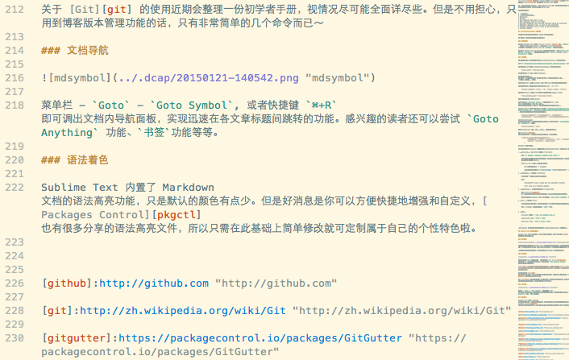

使用 Sublime Text 写作 Markdown
什么是 Markdown
Markdown 是一种轻量级标记语言，创始人为约翰·格鲁伯（John Gruber）。它允许人们“使用易读易写的纯文本格式编写文档，然后转换成有效的XHTML(或者HTML)文档”。 —— 来自维基百科 1
Markdown 创立的宗旨是实现「易读易写」。其语法简洁直观，你可以使用任何喜爱的文本编辑器来阅读和写作，更专注于书写的文字内容而不是排版样式。编辑完毕可轻松地导出成 HTML、PDF 等其它格式。
语法学习参考 : Markdown 语法说明(简体中文版)
Sublime Text 3 以及 OmniMarkupPreviewer
Sublime Text 是一套跨平台的文字編輯器，支持基於Python的外掛程式。Sublime Text 是專有軟體，可透過套件（Package）擴充本身的功能。大多數的套件使用自由軟體授權釋出，並由社群建置維護。 —— 来自维基百科 2
Sublime Text 作为近些年迅速崛起的后起之秀，凭借其精美的 UI 交互、完备的特色功能俘虏了一大批忠实用户。其风靡之势刺激了一些新老文本编辑器的重新思考和开发，开源实现 Lime Text Editor 无需多说，Github 主导的 Atom 以及号称下一代 Vim 编辑器的 neovim 都明确受到 Sublime Text 的影响。
而 OmniMarkupPreviewer 作为 Sublime Text 的一款强大插件，支持将标记语言渲染为 HTML 并在浏览器上实时预览，同时支持导出 HTML 源码文件。
支持的标记类语言:
- Markdown
- reStructuredText
- WikiCreole
- Textile
- Pod (Requires Perl >= 5.10)
- RDoc (Requires ruby in your PATH)
- Org Mode (Requires ruby, and gem org-ruby should be installed)
- MediaWiki (Requires ruby, as well as gem wikicloth)
- AsciiDoc (Requires ruby, as well as gem asciidoctor)
- Literate Haskell
OmniMarkupPreviewer 设置详解
文章仅提供了简单的安装使用说明，以及个人较为关注的设置选项。
想了解更多相关信息，请点击文档内链接并参考脚注部分。
安装和使用
你可以在 Sublime Text 内通过 Package Control 输入 Install Package 来安装 OmniMarkupPreviewer, 也可以从其 Github主页 下载压缩包，解压到 Sublime Text 的 Packages 目录即可完成安装。
Package Control - Sublime Text 的包管理器，简单好用，推荐安装
使用方法: Sublime Text 内 Markdown 标签页点击鼠标右键 - 选择Preview Current Markup in Browser。 或者使用快捷键 (macOS ⌘+⌥+O; Windows/LinuxCtrl+Alt+O) 来预览。
详细设置
OmniMarkupPreviewer 默认配置基本够用，但详细设置后才能将其特色功能充分发挥。
分享一下 ${packages}/User/OmniMarkupPreviewer.sublime-settings 文件:
${packages}路径为/Users/ashfinal/Library/Application Support/Sublime Text 3/Packages/注意用户账号替换。可通过点击菜单栏
Preferences-Browse Packages打开其 Finder 窗口
{
"server_host": "192.168.1.100",
"browser_command": ["open", "-a", "Google Chrome", "{url}"],
// User public static files should be placed into
// ${packages}/User/OmniMarkupPreviewer/public/
// User templates should be placed into:
// ${packages}/User/OmniMarkupPreviewer/templates/
// Requires browser reload
"html_template_name": "Evolution Yellow",
// list of renderers to be ignored, case sensitive.
// Valid renderers are: "CreoleRenderer", "MarkdownRenderer", "PodRenderer",
// "RDocRenderer", "RstRenderer", "TextitleRenderer"
// for example, to disable Textile and Pod renderer:
// "ignored_renderers": ["TextitleRenderer", "PodRenderer"]
"ignored_renderers": ["CreoleRenderer", "PodRenderer", "RDocRenderer", "TextitleRenderer", "LiterateHaskellRenderer"],
"mathjax_enabled": false,
// MarkdownRenderer options
"renderer_options-MarkdownRenderer": {
// Valid extensions:
// - OFFICIAL (Python Markdown) -
// "extra": Combines ["abbr", "attr_list", "def_list", "fenced_code", "footnotes", "tables", "smart_strong"]
// For PHP Markdown Extra(http://michelf.ca/projects/php-markdown/extra/)
// "abbr": http://packages.python.org/Markdown/extensions/abbreviations.html
// "attr_list": http://packages.python.org/Markdown/extensions/attr_list.html
// "def_list": http://packages.python.org/Markdown/extensions/definition_lists.html
// "fenced_code": http://packages.python.org/Markdown/extensions/fenced_code_blocks.html
// "footnotes": http://packages.python.org/Markdown/extensions/footnotes.html
// "tables": http://packages.python.org/Markdown/extensions/tables.html
// "smart_strong": http://packages.python.org/Markdown/extensions/smart_strong.html
// "codehilite": http://packages.python.org/Markdown/extensions/code_hilite.html
// "meta": http://packages.python.org/Markdown/extensions/meta_data.html
// "toc": http://packages.python.org/Markdown/extensions/toc.html
// "nl2br": http://packages.python.org/Markdown/extensions/nl2br.html
// - 3RD PARTY -
// "strikeout": Strikeout extension syntax - `This ~~is deleted text.~~`
// "subscript": Subscript extension syntax - `This is water: H~2~O`
// "superscript": Superscript extension syntax 0 `2^10^ = 1024`
// "smarty" or "smartypants": Python-Markdown extension using smartypants to emit
// typographically nicer ("curly") quotes, proper
// ("em" and "en") dashes, etc.
// See: http://daringfireball.net/projects/smartypants/
// And: https://github.com/waylan/Python-Markdown/blob/master/docs/extensions/smarty.txt
"extensions": ["extra", "codehilite", "toc", "strikeout", "smarty", "subscript", "superscript"]
}
}
结合配置文件注释，来一起看下让 OmniMarkupPreviewer 更好用的诸多选项:
"server_host": "192.168.1.100",
开启预览服务的 IP 地址, 默认为 localhost.
此处建议设置为本机固定 IP. 其好处在于：从局域网内的任意一台设备均可访问，可多设备同时在线，实现 一处编辑、多端预览 的效果。
你完全可以在 Mac 上编辑 Markdown 文档，而把 iPad 当作外接显示器来实时预览。
实际效果堪称完美，搞得我开始分外怀念已出手的 iPad ~ （；￣ェ￣）
"browser_command": ["open", "-a", "Google Chrome", "{url}"],
预览默认为 Safari 浏览器，但一段时间下来发现最好使用 Google Chrome.
"html_template_name": "Evolution Yellow",
预览使用的模板名称，默认为 Github.
此处为自定义模版 Evolution Yellow. 所谓模板其实就是非常简单的 CSS + HTML 文件，你可以修改背景、行宽、字体、边距 …… 等等样式相关的所有东西，甚至引入一些花哨的动画效果(你确定要这么做？)。
你可以在内置模板 Github 的基础上进行自定义，其路径为 ${packages}/OmniMarkupPreviewer/public/github.css, ${packages}/OmniMarkupPreviewer/templates/github.tpl. 修改完毕后依据注释提示分别放到相关路径即可。
"ignored_renderers": ["CreoleRenderer", "PodRenderer", "RDocRenderer", "TextitleRenderer", "LiterateHaskellRenderer"],
忽略/关闭的标记语言渲染器。
如前文介绍，OmniMarkupPreviewer 支持的标记语言非常多，但是笔者接触的种类比较有限，所以此处只开启了 MarkdownRenderer 和 RstRenderer 渲染器。
"mathjax_enabled": false,
强大的 JavaScript 引擎, 支持 LaTeX 编辑显示数学公式。
访问 MathJax 查看介绍及使用方法。不过笔者暂用不到这么高级的功能，所以此处禁用掉。
"renderer_options-MarkdownRenderer": { "extensions": ["extra", "codehilite", "toc", "strikeout", "smarty", "subscript", "superscript"] }
Markdown 渲染扩展选项。
对比某些功能缺失的 Markdown 编辑器就知道 OmniMarkupPreviewer 的强大之处，简单说下：
-
attr_list: 定义 HTML 标签属性 3
语法：
{#someid .someclass somekey='some value' }基本用途是实现篇幅较长的文档内的随意跳转。如果你网上查过相关资料的话，会发现搜索结果中的实现方式比较繁琐和 dirty.
开启 attr_list 支持后，实现语法非常简洁：
### 想要跳转到这里？ {#jumpid} 从页面的任何地方跳转到 [以上位置](#jumpid "跳转到'想要跳转到这里？'")
-
footnotes: 文档脚注 4
本文就使用了一些脚注来标记参考文档的网址。
语法：
Footnotes[^1] have a label and content. [^1]: This is a footnote content.
-
codehilite: 代码块语法高亮支持 5
需要 Pygments 库，支持300种语言及其它文本格式的语法高亮，并可以方便地自定义代码高亮样式。
如果之前没安装过 Pygments 的话，打开终端输入
pip install pygments即可。 -
toc: 文档目录 6
文章开头自动生成文档目录，并附带跳转链接。对了解长篇文章结构和快速跳转有较大帮助。
语法： Markdown 文档相应位置输入
[TOC]即可。 -
其它：
strikeout 删除线 -
This ~~is deleted text.~~superscript 上标 -
2^10^ = 1024subscript: 下标 -
This is water: H~2~O……
对 Markdown 语法的完备支持是选择和推荐 OmniMarkupPreviewer 的重要原因。
Sublime Text 相关功能说明
Sublime Text 作为一款功能强大、易于扩展的文本编辑器，提供了许多收费 Markdown 编辑器都不具备的增强功能。
项目管理
只需将想添加的目录拖放到 Sublime Text 即可轻松实现文件系统导航，支持多级目录和右键快捷操作，并可保存项目和工作空间。这样下次你打开该项目时，打开的标签页和编辑状态都一如从前。
因笔者刚开始写稿文章数量较少，图片部分借用之前 Django 项目来做直观展示
版本修订
使用系统自带的 Git 来做版本管理， 同时推荐安装 Git Gutter, 该插件可在 ST 左侧边栏显示修改标记，配合鼠标右键 Show Unsaved Changes 能很好的追踪文档修改纪录。
Git 作为目前最先进的分布式版本控制系统，最初是由开源领袖 Linus Torvalds 研发并创立社区针对程序员们提供服务的，但现在也被越来越多的科研工作者、开源爱好者、著书翻译者以及科技博客接受并使用。
此处我们仅使用 Git 强大系统的一部分功能，基本上只用来进行本地修订版本跟踪，当然你也可以推送到远端 Github 备份或者与他人进行分工协作。
关于 Git 的使用近期会整理一份初学者手册，视时间和精力尽可能全面详尽些。但是不用过分担心，只用到博客版本管理功能的话，只有非常简单的几个命令而已～
文档导航
点击菜单栏 Goto - Goto Symbol, 或者快捷键 ⌘+R 即可调出文档内导航面板，实现迅速在文章各标题间跳转的功能。感兴趣的读者还可以尝试 Goto Anything 、书签等等高级功能。
语法着色
Sublime Text 内置 Markdown 文档的语法高亮，只是默认的颜色有点少。但是好消息是你可以方便快捷地增强和自定义，Packages Control 网站上也有很多分享的语法高亮文件，你只需在此基础上简单修改就可定制属于自己的个性特色啦。
一款柔和养眼的淡黄色主题：

Vim 模式
Sublime Text 内置 Vim 模式支持，你只需到用户设置文件将 "ignored_packages": ["vintage"] 中的 vintage 删除即可。Sublime Text 并没有试图将 Vim 的按键映射全盘照搬过来，而是较好的进行了提炼融合。这使得大部分操作都能同时在编辑模式和命令模式下完成，有效地减少了在两种模式间不停切换的次数。
关于 Vim 相关操作请直接参考其网络教程，Sublime Text 对于绝大多数命令均支持。
坚持一段时间，相信你可以完全脱离鼠标的束缚，大大提高文本编辑的操作效率。
Code Snippet
如果想要在 Markdown 文档中插入链接、脚注 … 的话，你会怎么做？笔者刚学 Markdown 的时候傻乎乎地挨个敲入字符，而且经常搞混。后来接触到一些 Markdown 编辑器，使用菜单/快捷键的方式来插入，但笔者对此种操作方式不是非常认同，总觉得打断了正常的文档编辑流程。随着 Markdown 工具链的确定和完善，使用以前给人深刻印象的 Code Snippet 特性来实现就显得顺理成章了。
如何插入参考型链接如图所示：
只需在文本编辑流中正常输入 Code Snippet 后按 Tab 键，修改相应值就可以。对于不想修改的非必要值可按 Tab 键直接跳过，不小心输错可按 Shift+Tab 键往回跳转。输入过程中光标的移动全键盘操作，无需再腾手用鼠标点击。
目前笔者定义了四枚 Code Snippet, 对应如下：
-
mdlink- 插入链接 -
mdimg- 插入图片 -
mdacr- 插入参考式链接 -
mdfn- 插入脚注
无干扰模式
隐藏菜单栏、状态栏等无关界面元素，提供全沉浸、无干扰的写作模式。
点击菜单栏 View - Enter/Exit Distraction Mode 即可切换，快捷键为 ⌃+⇧+⌘+F.
此外，Sublime Text 还提供了诸多细节设计和功能，如多光标编辑、缩进参考线、代码地图、窗口分割、正则搜索替换等等。
功能总结
与某些号称简洁但缺失功能的软件不同，Sublime Text 在保持优雅设计和体验的同时，其功能性和扩展性可谓强悍无匹。而凭借 OmniMarkupPreviewer 插件，实现了对 Markdown 扩展语法的支持、 MathJax 公式编辑、 模板自定义等功能。 两者的结合还产生了大多数 Markdown 编辑器所不具有的特性，如多设备同步预览、Vim 模式、项目管理、Snippet 支持等等。
即使从专业 Markdown 编辑器的角度来看：
Sublime Text + OmniMarkupPreviewer 的组合也达到乃至超越了相当一部分 Markdown 编辑器，而且其整个实现方案是近乎免费的！实现了近乎完美的 Markdown 写作体验。
以上特色功能均作了文档内跳转，可点击链接回顾相关内容。
结束语
对 Sublime Text 及 OmniMarkupPreviewer 的介绍就到这里，欢迎感兴趣的读者朋友们一起讨论交流～
附录
用户 OmniMarkupPreviewer 配置文件已在前文提供，再附录上 Code Snippet 四枚：
分别保存后放到
${packages}/User/目录即可生效
-
Markdown_Link_(mdlink).sublime-snippet
<snippet> <content>< ]]></content> <tabTrigger>mdlink</tabTrigger> <scope>text.html.markdown.multimarkdown, text.html.markdown</scope> <description>Insert Link</description> </snippet>
-
Markdown_Image_(mdimg).sublime-snippet
<snippet> <content>< ]]></content> <tabTrigger>mdimg</tabTrigger> <scope>text.html.markdown.multimarkdown, text.html.markdown</scope> <description>Insert Image</description> </snippet>
-
Markdown_Anchor_(mdarch).sublime-snippet
<snippet> <content><![CDATA[ [${1:Display_Text}][${2:id}]$5 [$2]:${3:http://example.com/} ${4:"$3"} ]]></content> <tabTrigger>mdacr</tabTrigger> <scope>text.html.markdown.multimarkdown, text.html.markdown</scope> <description>Link Anchor</description> </snippet>
-
Markdown_Footnote_(mdfn).sublime-snippet
<snippet> <content><![CDATA[ [^${1:Footnote}]$3 [^$1]:${2:Footnote_Text} ]]></content> <tabTrigger>mdfn</tabTrigger> <scope>text.html.markdown.multimarkdown, text.html.markdown</scope> <description>Insert Footnote</description> </snippet>
文章链接：https://macplay.github.io/en/posts/shi-yong-sublime-text-xie-zuo-markdown/
发布/更新于：
版权声明：如无特别说明，本站文章均遵循 CC BY-NC-SA 4.0 协议，转载请注明作者及出处。